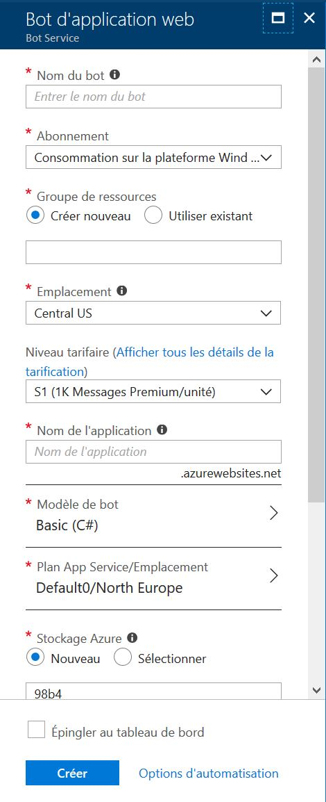

Créer un bot via Azure Bot Service
Bot Service vous permet de créer un nouveau Bot utilisant Bot Builder SDK et le Bot Framework et ceci très facilement et directement depuis Azure.
C'est le nouveau moyen standard pour très rapidement commencer le développement d'un bot.
Login sur Azure
Loggez vous sur le portail Azure.
Si vous n'avez pas de compte, vous pouvez en créer un gratuitement.
Créer le Bot
Cliquez sur Créer une resource en haut à gauche de l'écran, puis sélectionnez AI + Machine Learning > Web App Bot.
Une nouvelle section avec un formulaire va s'ouvrir. Celui-ci vous permet de remplir les informations de base de votre Bot.
Pour vous aider, vous pouvez suivre les instructions fournies juste en dessous de l'image.

| Setting | Suggested value | Description |
|---|---|---|
| Nom du bot | Le nom du bot | C'est le nom qui sera utilisé dans les channels et les listings. Il peut être changé à tout moment. |
| Abonnement | Votre abonnement | Sélectionnez l'abonnement Azure que vous voulez utiliser |
| Groupe de ressources | monNouveauGroupe | Vous pouvez créer un nouveau groupe de ressources ou en choisir un éxistant. |
| Emplacement | Emplacement par défaut | Sélectionnez l'emplacement géographique de votre groupe de resscources. Cela peut etre n'importe quel emplacement de la liste mais il est souvent plus judicieux de choisir un emplacement proche de vos utilisateurs. D'autant plus qu'elle ne peut être modifiée une fois le bot créé. |
| Niveau tarifaire | F0 | Sélectionnez un niveau tarifaire. Vous pouvez le changer à tout moment. Pour plus d'informations Tarifs de Bot Services. |
| Nom de l'application | Un nom unique | Le nom unique d'URL du Bot. Par exemple, si vous appelez votre bot monsuperbot, alors son url sera http://monsuperbot.azurewebsites.net. Le nom ne peut se composer que de caractères alphanumeriques et d'underscores, avec un maximum de 35 caractères. Ce nom ne peut être modifié une fois le bot créé. |
| Modèle de bot | Basic | Choisissez C# ou Node.js et sélectionnez le template Basic pour ce tutoriel, puis appuyez sur Sélectionner. Le template Basic crée un echo bot. En savoir plus (en anglais). |
| Plan App service/Emplacement | Votre plan app service | Selectionnez un emplacement de plan app services. Cela peut etre n'importe quel emplacement de la liste mais il est souvent plus judicieux de choisir un emplacement proche de vos utilisateurs.(Indisponible pour les Functions Bots.) |
| Stockage Azure | Votre compte de stockage azure | Vous pouvez créer un nouveau compte de stockage de données ou en utiliser un existant. Par défaut, le bot va utiliser Table Storage. |
| Application Insights | Activé(e) | Choisissez si vous voulez Activer ou Désactiver Application Insights. Si vous choisissez Activer, vous devrez aussi choisir un emplacement régional. Cela peut etre n'importe quel emplacement de la liste mais il est souvent plus judicieux de choisir un emplacement proche de vos utilisateurs. |
| ID d'application Microsoft et mot de passe | Créer automatiquement l'ID d'application et le mot de passe | Utilisez cette optiob si vous voulez créer manuellement un ID d'application et un mot de passe. Sinon, ils seront générés pour vous pendant le processus de création du bot. |
Enfin appuyez sur créer pour lancer la génération du bot. Le processus peut prendre plusieurs minutes, le temps de créer tous les services associés.
Tester votre nouveau bot
Une fois la génération terminée, vous allez voir votre nouveau bot sur votre Dashboard. Cliquez dessus afin d'ouvrir la section permetant de gérer votre Bot, puis cliquez sur Tester dans une discussion web.
Dans la fenêtre qui s'est ouverte vous pouvez dès maintenant tester votre echo bot ! Celui ci devrait vous répondre en vous répétant ce que vous lui avez dit.
Aller plus loin : Modification du bot
Le bot est maintenant créé, mais il ne fait vraiment que le strict minimum. Dans un prochain article, je vous montrerai comment récupérer le code du bot pour le modifier et le mettre à jour sur Azure !